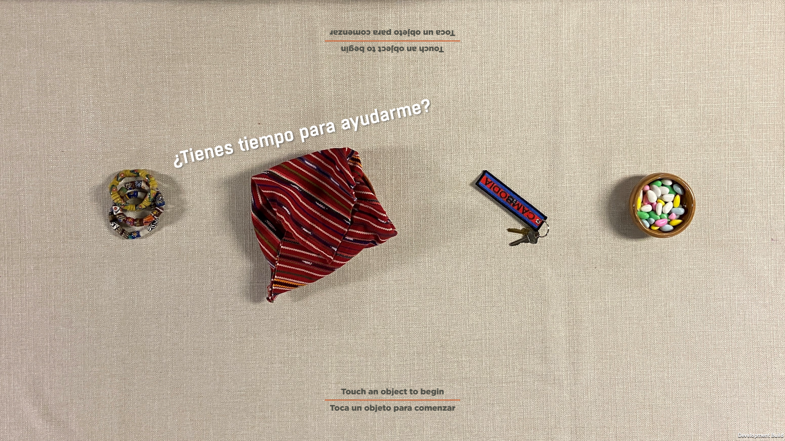
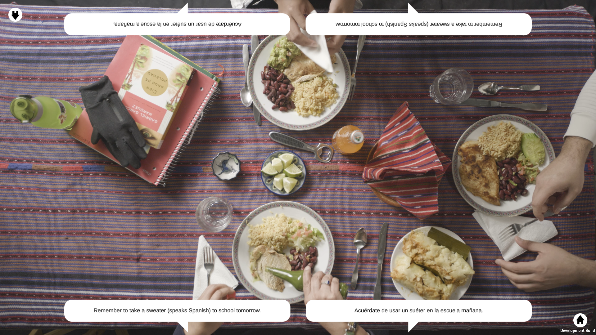
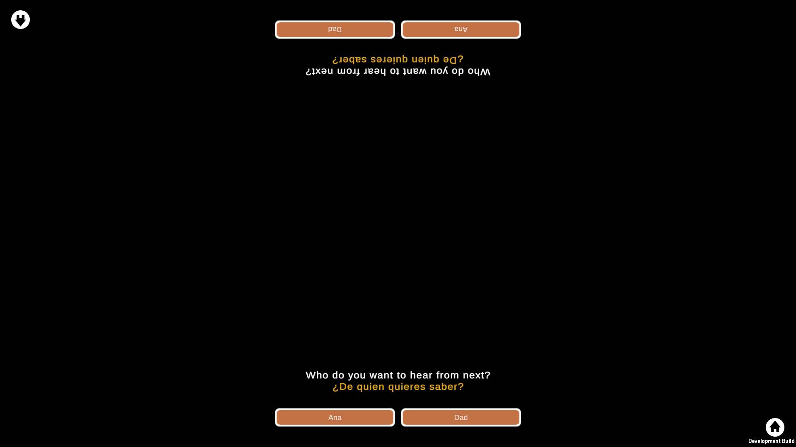

NLP: Lowell "A Seat At The Kitchen Table"
A video player interactive on a 4K touchscreen "table" developed for Lowell National Historical Park.
I developed all five interactives and the content management system (CMS) for the project. This interactive is touchscreen oriented to look like a table
where users on either long side of the screen can pick a scenario to view. Each scenario follows a different set of characters and has several videos with branching paths.
Between each viewing in the scenario, you're able to pick one of two characters to hear from next. All paths chosen converge at the end of the scenario.

